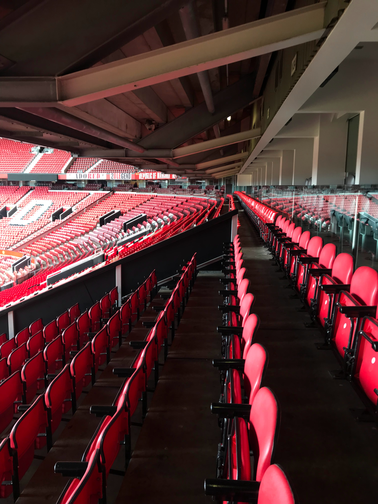

Things to do in Manchester

Football Tours
Experience the magic of Old Trafford with Manchester United Stadium Tours - a must-do for any football fan or lover of sports.

Live Music
Manchester's vibrant music scene offers an unforgettable live experience, with a range of venues hosting world-renowned artists and up-and-coming talent.

Canal Street
Manchester's Gay Village is a vibrant and inclusive community, home to a wide variety of LGBTQ+ bars, restaurants, and venues.